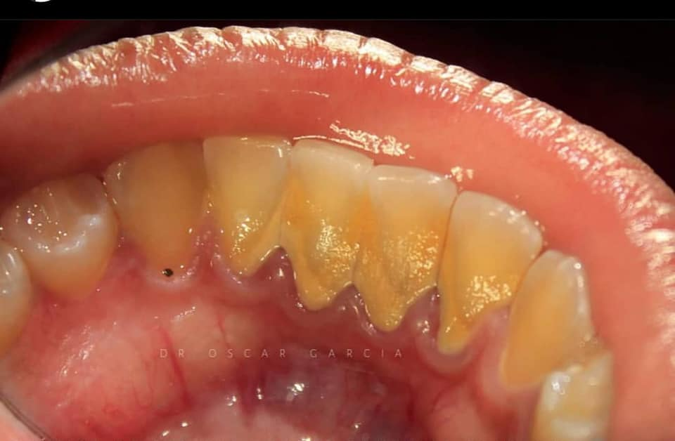

Se realizó aislamiento relativo con rollos de algodón. Se limpió la superficie con piedra pómez y agua.
Tratamientos dentales
En nuestra clínica, cada tratamiento está diseñado pensando en ti: en tu bienestar, tu comodidad y en lograr los mejores resultados posibles.
Desde limpiezas preventivas hasta tratamientos avanzados de ortodoncia y estética dental, te ofrecemos soluciones integrales para cuidar tu salud bucal con tecnología de vanguardia y un trato humano excepcional.

Restauración dental por fractura

¿Qué es una fractura dental?
Una fractura dental es una interrupción en la estructura del diente causada por traumatismos, desgaste funcional, fuerzas excesivas al masticar o debilidad estructural previa. Estas pueden afectar desde el esmalte superficial hasta la pulpa dental. Las fracturas pueden clasificarse según su profundidad y localización en:
- Infracciones del esmalte
- Fracturas coronarias sin compromiso pulpar
- Fracturas coronarias con compromiso pulpar
- Fracturas radiculares
Cada tipo requiere un enfoque clínico distinto, desde selladores hasta tratamientos restaurativos o endodónticos.
Restauración de fractura dental con resina directa
Diagnóstico inicial
El paciente acudió a consulta con una fractura en el tercio incisal del incisivo central superior derecho, producto de un traumatismo leve.
La fractura no afectaba la pulpa y el diente presentaba sensibilidad leve pero conservaba vitalidad.

Resultado final
El diente recuperó su forma, color y función, integrándose de forma armoniosa al conjunto dental. La restauración es imperceptible a simple vista y la sonrisa fue completamente rehabilitada sin comprometer estructura dental sana.

Restauración y Rehabilitación dental

¿Qué es una rehabilitación dental con implante?
Cuando un diente se pierde —ya sea por fractura, caries avanzada o enfermedad periodontal— no solo se afecta la estética de la sonrisa, sino también la capacidad funcional para hablar y masticar correctamente.
La rehabilitación con implante es una solución moderna, segura y altamente estética, que permite reemplazar una pieza dental ausente sin afectar los dientes vecinos.
Un implante actúa como una raíz artificial de titanio que se integra al hueso, sobre la cual se coloca posteriormente una corona personalizada. Este tratamiento ofrece durabilidad, estabilidad y un resultado natural que restablece completamente la función y apariencia del diente perdido.
Rehabilitación dental con implante y corona.
Situación inicial
El paciente acudió con pérdida dental funcional en un sector posterior, resultado de una fractura con imposibilidad de restauración.
La pieza fue removida previamente, dejando un espacio edéntulo visible que comprometía tanto la masticación como la estabilidad oclusal.

Procedimiento realizado
Evaluación y planificación
Se realizó estudio clínico y radiográfico para confirmar la viabilidad ósea, espacio protésico y condiciones de tejidos blandos. Se confirmó la opción de un implante oseointegrado como solución ideal.
Colocación del implante
Mediante cirugía mínimamente invasiva, se colocó el tornillo de titanio en el alveolo edéntulo, cuidando la paralelidad y profundidad. Se dejó un periodo de osteointegración de aproximadamente 3 meses.

Colocación del pilar protéstico y corona final
Tras comprobar la estabilidad del implante, se colocó el pilar protésico personalizado y posteriormente una corona cerámica de alta estética. Se cuidó forma y contacto proximal para preservar la función masticatoria y armonía con las piezas adyacentes.

Resultado
Se logró una rehabilitación completa, funcional y estética con un resultado indistinguible de un diente natural. El paciente recuperó la seguridad al masticar y sonreír, sin necesidad de comprometer piezas vecinas como en el caso de un puente convencional.
Profilaxis dental profesional
La profilaxis es un procedimiento preventivo que elimina placa bacteriana, cálculo y pigmentaciones extrínsecas de los dientes. A diferencia del cepillado cotidiano, esta limpieza se realiza con instrumental especializado y está diseñada para alcanzar zonas que el paciente no puede higienizar por sí solo.
Este tratamiento no solo ayuda a prevenir caries y enfermedades periodontales, sino que también mejora visiblemente la apariencia dental, brindando una sonrisa más fresca y saludable.
Acumulación de sarro y placa bacteriana
El paciente acudió con una notable acumulación de cálculo supragingival (sarro) en los dientes inferiores, visible en la imagen superior. Esta calcificación se adhiere firmemente a la superficie dental y no puede eliminarse con cepillado normal.
Además de afectar la estética, el sarro es un factor de riesgo para gingivitis, mal aliento y progresión de enfermedad periodontal.
Eliminación completa del cálculo y restauración de la salud gingival
Se realizó una profilaxis profesional con ultrasonido, eliminando cuidadosamente el cálculo sin dañar el esmalte. El procedimiento fue complementado con cepillado rotatorio y pasta profiláctica para pulir la superficie dental, dejando los dientes limpios, lisos y saludables.
El resultado es una superficie libre de depósitos duros, con encías más limpias y sin sangrado.

Impacto inmediato de una limpieza dental profesional
afectando tanto la estética como el estado de salud gingival.
El paciente presenta acumulación visible de sarro en el sector anterior inferior.
Procedimiento realizado
Se llevó a cabo una profilaxis profesional utilizando ultrasonido para eliminar el cálculo adherido y posteriormente pulido con pasta profiláctica.
Resultado
Mejora estética inmediata y reducción del riesgo periodontal, con encías visiblemente más sanas.
Rehabilitación adhesiva con resina compuesta
¿Qué es una rehabilitación adhesiva con resina compuesta?
Es un procedimiento conservador que permite restaurar dientes dañados o desgastados mediante la aplicación de capas de resina compuesta directamente sobre el diente.
Este tipo de rehabilitación se adhiere de forma química al esmalte y la dentina, sin necesidad de tallar excesivamente la estructura dental sana.
Su principal ventaja es la capacidad de recuperar forma, color y función dental de manera mínimamente invasiva, manteniendo la estética y la salud bucal del paciente.
Tratamiento realizado
Se realizó el retiro completo del material deteriorado, seguido por una rehabilitación adhesiva directa con resina compuesta de tono natural. El procedimiento se enfocó en recuperar la anatomía, color y función del diente afectado.
Extracciòn quirùrgica
¿Qué es una extracción quirùrgica molar?
La extracción quirúrgica de un molar es un procedimiento odontológico mediante el cual se retira un diente que no puede ser extraído de forma convencional. Esto suele deberse a situaciones como retención ósea, caries avanzadas, raíces comprometidas o fracturas que imposibilitan una extracción simple.
A través de técnicas quirúrgicas controladas —como colgajos, osteotomía y separación radicular— se logra remover la pieza afectada con mínima invasión, cuidando la integridad del hueso y tejido circundante.Descripción del caso
Tras la extracción quirúrgica de un molar con compromiso estructural severo, el video muestra la pieza dental ya retirada, permitiendo observar sus raíces completas y el estado postoperatorio inmediato.
Este tipo de registro es útil tanto para documentación clínica como para educación del paciente, mostrando que el procedimiento fue exitoso y sin fragmentación radicular.
Blanqueamiento dental con luz activadora
¿Qué es el blanqueamiento dental con luz LED?
El blanqueamiento dental con luz LED es un tratamiento estético que busca aclarar el tono natural de los dientes mediante el uso de un gel blanqueador (generalmente a base de peróxido) activado por una fuente de luz.
La luz acelera la reacción química del gel, permitiendo obtener resultados visibles en menor tiempo y con mayor eficacia.
Es un procedimiento no invasivo, ideal para pacientes que desean mejorar la estética de su sonrisa sin alterar la estructura dental.Blanqueamiento LED de arcada superior
Estado inicial
El paciente acudió con dientes oscurecidos por pigmentación extrínseca, resultado del consumo de café y desgaste del esmalte.
Procedimiento
Se aplicó un gel blanqueador de alta concentración y se activó mediante luz LED durante tres ciclos de 15 minutos.
Se utilizó aislamiento con dique líquido para proteger los tejidos blandos.
Introducción clínica
El blanqueamiento dental con luz LED es un procedimiento estético no invasivo que utiliza un gel blanqueador activado por una fuente de luz fría.
Esta técnica acelera la eliminación de manchas y pigmentaciones, logrando una sonrisa más clara en una sola sesión.
Es ideal para pacientes que buscan resultados rápidos y seguros, sin comprometer la estructura dental.Descripción del caso
Paciente con tinciones extrínsecas moderadas en dientes anteriores. Se aplicó gel de peróxido de hidrógeno al 35% y se activó con lámpara LED durante tres ciclos de 15 minutos. El video muestra el procedimiento completo y el cambio de tono logrado.